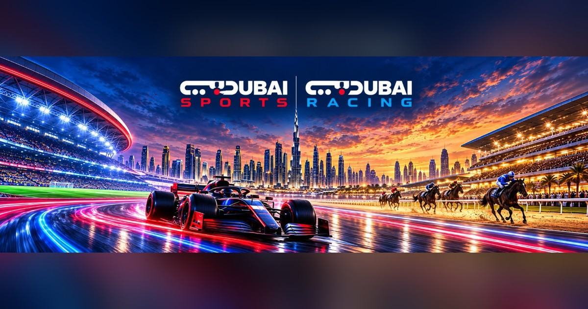

تحديث بيانات المتعاونين
يرجى تحديث بياناتكم وإرفاق المستندات المطلوبة لاستكمال إجراءات تجديد عقود التعاون. يمكنكم الاستعانة بالمساعد الذكي «محمد» لتعبئة البيانات بسهولة.
بدء تحديث البيانات ←
يرجى تحديث بياناتكم وإرفاق المستندات المطلوبة لاستكمال إجراءات تجديد عقود التعاون. يمكنكم الاستعانة بالمساعد الذكي «محمد» لتعبئة البيانات بسهولة.
بدء تحديث البيانات ←